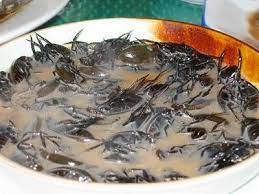

Coconut Ginger Cockroaches

Would you like to know how to make Coconut Ginger Cockroaches?
I will tell you. But first, cup my genitals in your hands, they look
so soft. So soft.
Steps
- Leave food out overnight for a week until there is a
healthy cockroach colony.
- Befriend cockroaches. Give them each a name.
- Spend years teaching them language and bonding with them.
- Get into a lover's fight and cook them, just chuck
them in a pot with some ginger bits and coconut milk.
And now, for the secret.
Emotional trauma and years of preparation are what give this
recipe such a unique twist.
Enjoy my grandma's Coconut Ginger Cockroaches.
Home